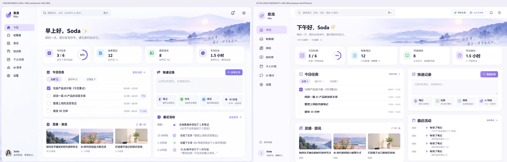

<!doctype html>
<html lang="zh-CN"><meta charset="utf-8"><meta name="viewport" content="width=device-width,initial-scale=1"><title>息流 · 首页参考图对照</title>
<style>body{margin:0;background:#f6f5fa;color:#2b2639;font:15px/1.6 system-ui,sans-serif}header{padding:28px 4vw;background:white;border-bottom:1px solid #e9e4f3}h1{font-size:24px;margin:0 0 8px}p{margin:0;color:#756d83}nav{display:flex;gap:8px;flex-wrap:wrap;padding:18px 4vw;position:sticky;top:0;background:#f6f5faf2;backdrop-filter:blur(8px)}button,a{font:inherit;color:#7452bf;border:1px solid #e3dced;background:white;padding:8px 15px;border-radius:10px;text-decoration:none;cursor:pointer}button[aria-pressed=true]{background:#e9e0ff}main{padding:0 3vw 40px}img{display:block;width:100%;height:auto;border-radius:16px;background:white;box-shadow:0 8px 30px #5031760b}small{display:block;margin-top:12px;color:#80748e}</style>
<header><h1>息流 · 首页山水工作台</h1><p>用户参考图与真实 Edge 截图对照；原有主题保留。临时真实 API 数据用于验收。</p></header>
<nav aria-label="截图选择"><button data-image="reference-vs-implementation.png" aria-pressed="true">参考 / 实现</button><button data-image="before-after-desktop.png" aria-pressed="false">原有 / 新主题</button><button data-image="task-detail-comparison.png" aria-pressed="false">任务细节</button><button data-image="capture-comparison.png" aria-pressed="false">速记弹窗</button><button data-image="after-mobile.png" aria-pressed="false">移动端</button><button data-image="dark-large-desktop.png" aria-pressed="false">暗色大字号</button><a href="README.md">文件与测试报告</a><a href="http://127.0.0.1:5198/today" target="_blank" rel="noopener">打开项目（选择山水工作台）</a></nav>
<main><small>桌面以 1440 × 884 CSS 像素对照；可点击图片在新标签打开原尺寸。</small></main>
<script>const img=document.querySelector('#comparison');document.querySelectorAll('[data-image]').forEach(button=>button.addEventListener('click',()=>{document.querySelectorAll('[data-image]').forEach(b=>b.setAttribute('aria-pressed','false'));button.setAttribute('aria-pressed','true');img.src=button.dataset.image;img.alt=button.textContent;img.style.maxWidth=button.dataset.image==='after-mobile.png'?'390px':'none';img.style.margin='auto'}));img.addEventListener('click',()=>window.open(img.src,'_blank','noopener'))</script></html>
